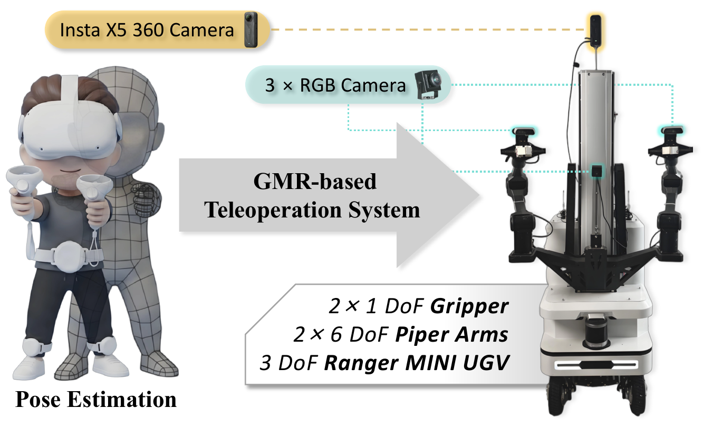
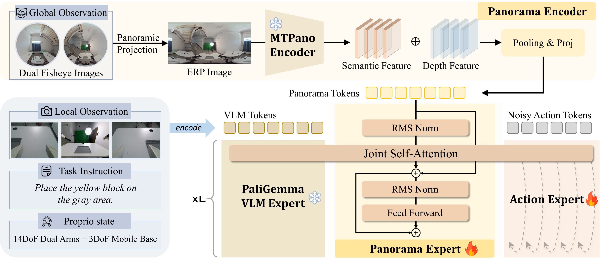
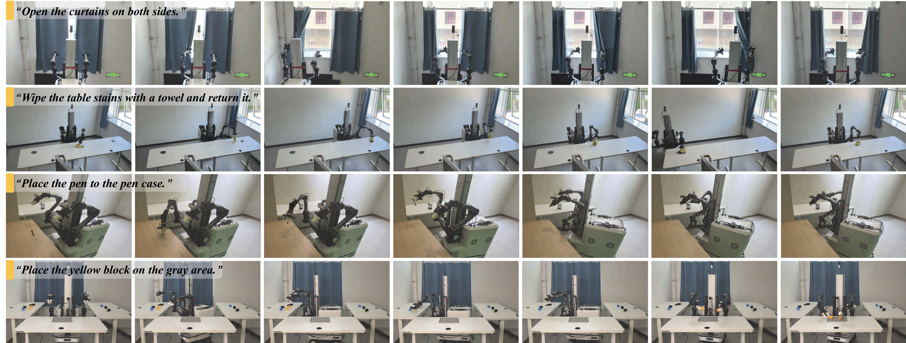

VR Whole-Body Control
A single wearable interface captures operator motion and command intent for mobile bimanual manipulation.
Mobile Manipulation · Panorama-Aware VLA · Whole-Body Teleoperation
PanoVLA injects robot-centric panoramic context into a vision-language-action policy for long-horizon mobile bimanual manipulation.
Mobile manipulation is a key capability for embodied intelligence, enabling robots to accomplish complex multi-stage tasks in open-world environments. However, mobile manipulation poses two key challenges for vision-language-action policies: efficiently collecting high-quality whole-body demonstrations and representing the surrounding environment under continuous base motion.
We develop a whole-body teleoperation system and a panoramic-aware VLA policy. The system enables coordinated control of a wheeled bimanual robot through a single VR interface and supports the acquisition of a real-world mobile manipulation dataset comprising 5.5 hours of multimodal demonstrations. Building on this dataset, we propose PanoVLA, a panorama-aware vision-language-action policy for mobile bimanual manipulation.
PanoVLA introduces global spatial context through dedicated panorama encoding and fusion modules, enabling effective integration of panoramic observations with language instructions and robot states for action generation. In four real-world tasks, PanoVLA achieves an average stage completion rate of 91.3% and an end-to-end success rate of 73.4%, substantially outperforming local-view baselines.
Data Collection
A whole-body VR interface turns human intent into synchronized mobile base, dual-arm, and gripper demonstrations.

A single wearable interface captures operator motion and command intent for mobile bimanual manipulation.
The wheeled base is represented as a planar virtual floating base, allowing navigation and arm motion to be coordinated.
The system supports 800 real-world trajectories and 5.5 hours of multimodal demonstrations.
Method
PanoVLA injects robot-centric panoramic context into a VLA action policy for long-horizon mobile manipulation.

A top-mounted 360-degree camera captures robot-centric scene context beyond the local camera field of view.
A dedicated branch fuses panorama tokens with language, local visual observations, and robot state.
The policy predicts action chunks covering dual arms, grippers, and mobile base velocity.
Evaluation
Four real-world tasks stress target search, mobile approach, manipulation, and multi-stage spatial state tracking.

Place the pen in its holder across front, left, and right layouts.
Transfer blocks to the front area from left, right, or both sides.
Open curtains on the left, right, or both sides of the workspace.
Wipe table stains along a long surface and return the cloth.
PanoVLA improves both intermediate stage completion and full task completion across the four real-world mobile manipulation tasks. The average stage completion rate reaches 91.3%, and the average end-to-end success rate reaches 73.4%.
| Method | Avg. SCR | Avg. SR |
|---|---|---|
| π0.5 | 58.6% | 30.0% |
| π0.5 w/ Pano | 80.8% | 56.7% |
| π0.5 w/ Stacked Pano | 70.4% | 38.3% |
| PanoVLA | 91.3% | 73.4% |
Replace the venue fields after the final publication details are available.
@misc{yang2026learningpanoramaawarevlamobile,
title={Learning Panorama-Aware VLA for Mobile Manipulation with Whole-Body Teleoperation},
author={Donglin Yang and Haoran Chen and Xingyu Chen and Lixing Liu and Manyi Li and Changhe Tu and Ke Xu and Xiaojian Ma and Si Liu},
year={2026},
eprint={2608.02257},
archivePrefix={arXiv},
primaryClass={cs.RO},
url={https://arxiv.org/abs/2608.02257},
}